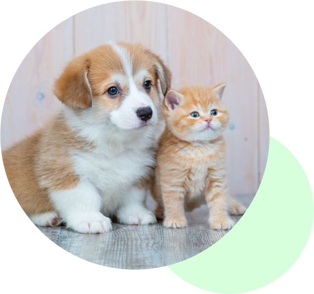
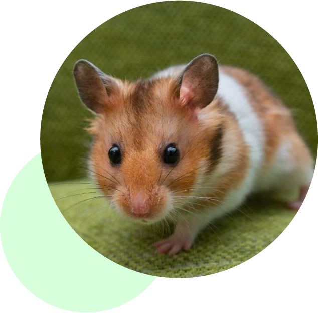

犬・猫の診療
飼い主さまと大切な家族である ワンちゃん・ネコちゃんが、 いつまでも元気に過ごせるよう サポートいたします。 一般診療からワクチン、健康相談 まで幅広く対応しています。 小さな不調もお気軽にご相談ください。
当院で対応している診察のご案内です

飼い主さまと大切な家族である ワンちゃん・ネコちゃんが、 いつまでも元気に過ごせるよう サポートいたします。 一般診療からワクチン、健康相談 まで幅広く対応しています。 小さな不調もお気軽にご相談ください。

うさぎ・ハムスター・モルモットなどの 小動物にも対応しています。 体が小さい分、ちょっとした変化が 大きなサインになることもあります。 経験豊富なスタッフが、動物の種類に 合わせた丁寧な診察を行います。
病気の早期発見や予防のために、 定期的な健康チェックをおすすめ しています。 年齢や生活環境に合わせた検査、 予防プランをご提案し、ペットが 健やかに暮らせるようお手伝いします。